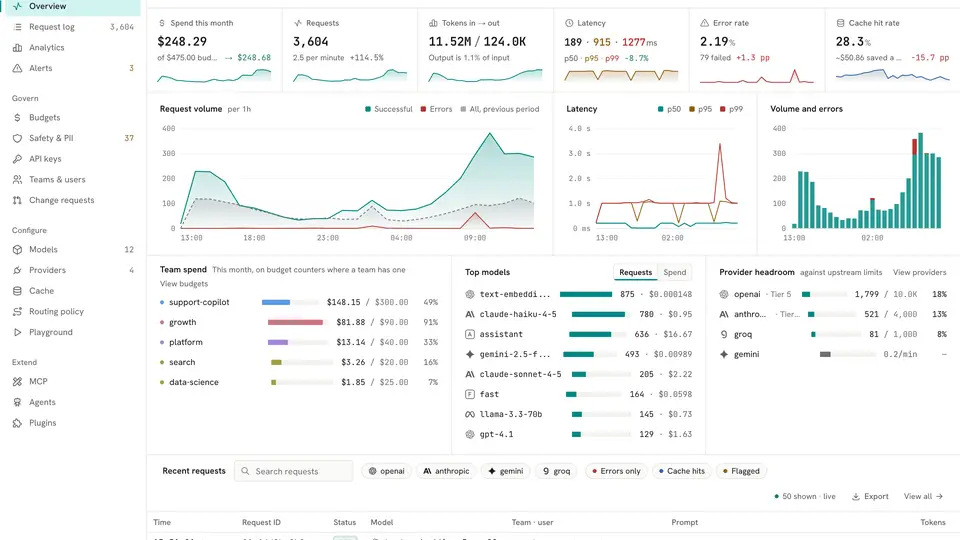
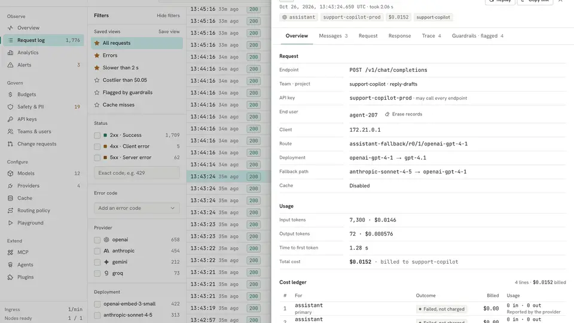

One gateway for every AI provider: a hands-on guide to Antirion
Every app you build wants its own provider key. Keys sprawl across .env files, spend stays invisible until the invoice, and switching models means rewiring code. Antirion fixes that by putting one gateway in front of all of them: your apps talk to one OpenAI-compatible API, and the gateway routes, logs and budgets every request. Here is how to run it in about fifteen minutes.
chat, create an app key, and send requests that show up in the Request log with tokens, latency and cost.- What: Antirion — an open-source AI gateway: one Rust binary, console built in, sitting between your apps and every model provider, translating between OpenAI, Anthropic, Gemini and Bedrock client protocols.
- Project: eliasbiondo/antirion, Apache-2.0 license, launched 2026-10-17, 198 stars and 7 forks (verified 2026-10-24).
- Run:
docker run -p 8080:8080 -p 8081:8081 -v antirion-data:/var/lib/antirion eliasbiondo/antirion— no config file needed. Data plane athttp://localhost:8080/v1, console athttp://localhost:8081/ui/. - Providers: OpenAI, Azure OpenAI, Anthropic, Amazon Bedrock, Google Vertex AI, Gemini, Mistral, Cohere, Groq, Together, Fireworks, DeepSeek, xAI, Cerebras, DeepInfra, Perplexity, plus any OpenAI- or Anthropic-compatible server such as vLLM.
- Performance (the project’s own benchmark, AWS c7i.xlarge with 4 vCPUs): 0.53 ms median overhead at 5,000 requests per second; 21,512 requests per second over 64 connections; 215 MiB peak memory.
- Control: fallback chains, weighted splits, and least-cost / least-latency routing; rate limits and budgets in dollars or tokens per organization, team, project and key.
Every app you build wants its own provider key. One for OpenAI in the chatbot, one for Anthropic in the summarizer, another for the cheap model that classifies tickets. The keys sprawl across .env files, nobody can say what last month cost per feature, and swapping a model means touching code in every service that calls it.
A gateway puts one door in front of all of that. Your apps send every request to the same address with the same key format, and the gateway decides which provider and model actually answers, records what it cost, and lets you cap spend per key or project. Antirion is a new open-source gateway in that lane, and its pitch is speed and simplicity: a single Rust binary with the admin console built in, no sidecars, no separate UI deployment, nothing else to install.
It is eliasbiondo/antirion, Apache-2.0 licensed, launched on 2026-10-17, and it collected 198 GitHub stars in its first week. The project positions itself against LiteLLM and Bifrost and publishes its own benchmark to back the speed claim — 0.53 ms median overhead at 5,000 requests per second on a 4-vCPU AWS c7i.xlarge, against 19.7 ms for Bifrost 2.2.4 in the same harness, with LiteLLM failing at that rate. Treat those as the project’s own numbers, not independent ones: the harness is in the repo under bench/ if you want to reproduce them.
What you'll need
- Docker installed and running
- An API key from OpenAI or Anthropic (or any of the other supported providers)
- A terminal and about 15 minutes
- Optional: a second provider key, to try fallback routing later
Run your own AI gateway
1. Start the gateway
One command, no config file:
docker run -p 8080:8080 -p 8081:8081 -v antirion-data:/var/lib/antirion eliasbiondo/antirion
Two ports matter. Port 8080 is the data plane — the /v1 API your apps call. Port 8081 is the admin plane — the Admin API and the web console. The antirion-data volume holds everything the gateway learns: providers, models, keys and history, so a restart keeps them all.
On the first start the log prints the console address and an admin token, shown that once:
Console http://localhost:8081/ui/
Admin token ak-antirion-…
Shown on this first start only; it is kept in
/var/lib/antirion/data/bootstrap-token
Copy the token now. If you lose it, it is recoverable from the volume (step 3 of the FAQ below). docker run --rm eliasbiondo/antirion serve --help lists the ports, the data directory and the other settings.
2. Sign in to the console
Open http://localhost:8081/ui/ and paste the admin token into Admin token. From the console you can invite your team, so everyone signs in with their own account instead of sharing the token.

3. Add a provider
Go to Providers → Add provider, choose OpenAI or Anthropic, and paste its API key. Hit Test: the gateway asks the provider for its models, and the provider is saved only once the test passes, so a wrong key fails here instead of at request time. Then Add provider.
The full provider list is long: OpenAI, Azure OpenAI, Anthropic, Amazon Bedrock, Google Vertex AI, Gemini, Mistral, Cohere, Groq, Together, Fireworks, DeepSeek, xAI, Cerebras, DeepInfra, Perplexity — plus any OpenAI- or Anthropic-compatible server such as vLLM, which is how a local model joins the same gateway.
4. Add a model named chat
Go to Models → Add model, pick the provider, then a model from the list the provider returned — the README’s examples are gpt-4.1-mini and claude-haiku-4-5. The list shows each model’s list price, which applies when you leave the price fields blank. Name it chat — that is the name your apps will send — and Add model.
This indirection is the whole point. Your code asks for chat forever; when you want a different model behind that name, you change it in the console, not in every app.
5. Create an API key
Go to API keys → Create key, name it my-app (the project default is already chosen), then Copy: the key is shown once.
export ANTIRION_API_KEY=<your-antirion-key>
6. Send a request
curl -s http://localhost:8080/v1/chat/completions \
-H "Authorization: Bearer $ANTIRION_API_KEY" -H 'Content-Type: application/json' \
-d '{"model": "chat", "messages": [{"role": "user", "content": "Hello"}]}'
Any OpenAI SDK works the same way: point its base URL at http://localhost:8080/v1. Anthropic SDKs point at http://localhost:8080 instead. The gateway translates between client protocols, so an Anthropic-shaped client can talk to an OpenAI-shaped provider and vice versa.
7. Watch it in the Request log
Open Request log. Your request is there with its status, model, key, tokens, latency and cost; select it for the details, from the route taken to the cost ledger. The Playground in the console sends test requests without writing any code.

What you built
One address your apps call for every model, with one key format, a console that shows spend, requests, latency and errors, and a per-request ledger of tokens and cost. Swap the model behind chat in the console and every app follows. Add a second provider and you have the raw material for fallback chains and least-cost routing — the gateway decides per request and records the route it took. Rate limits and budgets in dollars or tokens, per organization, team, project and key, are built in for when one app starts spending like it owns the place.
Honest limitations
- You still pay the provider. The gateway does not make models free — it makes spend visible and capped. Your provider bill is still your provider bill; the Request log just tells you exactly which key and model ran it up.
- Docker is the easy path. Release binaries exist for Linux (amd64 and arm64) at the project’s releases page; on macOS and Windows the documented route is the container image or a build from source.
- One node by default. The zero-config setup runs a standalone node with an embedded store. A cluster that shares PostgreSQL and Valkey is documented, but that is a deployment project, not a one-liner.
- It is one week old. Launched 2026-10-17 with 198 stars; expect rough edges and fast-moving docs. The benchmark figures above are the project’s own, measured against Bifrost 2.2.4 and LiteLLM 1.103.1 in its own harness.
- The admin token is shown once. Lose it and you are recovering it from the volume (see the FAQ) — keep it in a password manager the moment the first start prints it.
- No provider key, no hosted models. You need at least one provider key for hosted models; the docs describe a way to try Antirion without one, and any OpenAI-compatible local server (vLLM and friends) works as a provider.
Frequently asked questions
Do I still need provider API keys?
Yes. Antirion sits between your apps and the providers, so you add at least one provider key — OpenAI, Anthropic, or any of the others — and the gateway tests it by asking the provider for its models, saving it only once the test passes. It does not make models free: it routes requests and records what each one costs.
Can my existing code use it without rewrites?
If it speaks OpenAI, yes: point its base URL at http://localhost:8080/v1, send the Antirion key, and ask for the model name you registered — chat in this guide. Anthropic SDKs point at http://localhost:8080 instead, and the gateway translates between the client protocols.
What if I lose the admin token?
It is kept in the gateway’s data volume at /var/lib/antirion/data/bootstrap-token; recover it with docker cp <container>:/var/lib/antirion/data/bootstrap-token - | tar -xO. Your providers, models, keys and history live in the antirion-data volume, so they survive a container restart.